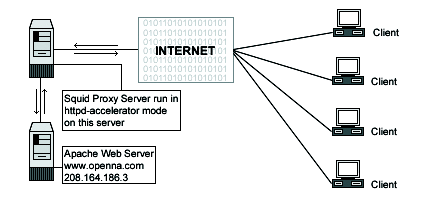

| Securing and Optimizing Linux: RedHat Edition -A Hands on Guide | ||
|---|---|---|
| Prev | Chapter 28. Software -Server/Proxy Network | Next |
The squid.conf file is used to set and configure all the different options for your Squid proxy server. In the configuration file below, we'll configure the /etc/squid/squid.conf file to be in httpd-accelerator mode. In this acceleration mode, if the Web Server runs on the same server where Squid is installed, you must set its daemon to run on port 81. With the Apache web server, you can do it by assigning the line Port 80 to Port 81 in its httpd.conf file. If the Web Server runs on other servers in your network like we do, you can keep the same port number (80) for Apache, since Squid will bind on a different IP number where port (80) is not already in use.

Edit the squid.conf file, vi /etc/squid/squid.conf and add/change the following options:
http_port 80
icp_port 0
acl QUERY urlpath_regex cgi-bin \?
no_cache deny QUERY
cache_mem 16 MB
cache_dir ufs /cache 200 16 256
emulate_httpd_log on
redirect_rewrites_host_header off
replacement_policy GDSF
acl all src 0.0.0.0/0.0.0.0
http_access allow all
cache_mgr admin@openna.com
cache_effective_user squid
cache_effective_group squid
httpd_accel_host 208.164.186.3
httpd_accel_port 80
log_icp_queries off
cachemgr_passwd my-secret-pass all
buffered_logs on
|
The option http_port specifies the port number where Squid will listen for HTTP client requests. If you set this option to port 80, the client will have the illusion of being connected to the Apache Web Server. Since we are running Squid in accelerator mode, we must listen on port 80.
The option icp_port specifies the port number where Squid will sends and receive ICP requests from neighboring caches. We must set the value of this option to 0 to disable it, since we are configuring Squid to be in accelerator mode for the Web Server. The ICP feature is needed only in a multi-level cache environment with multiple siblings and parent caches. Using ICP in an accelerator mode configuration would add unwanted overhead to Squid.
The options acl QUERY urlpath_regex cgi-bin \? and no_cache deny QUERY are used to force certain objects to never be cached, like files under cgi-bin directory. This is a security feature.
The option cache_mem specifies the amount of memory; RAM, to be used for caching the so called: In-Transit objects, Hot Objects, Negative-Cached objects. This is an optimization feature. It's important to note that Squid can uses much more memory than the value you specify in this parameter, and for this reason if you have 48 MB free for Squid, you must put 48/3 = 16 MB here.
The option cache_dir specifies in this order: which kind of storage system to use; ufs, the name of the cache directory; /cache for Squid, the disk space in megabytes to use under this directory 200 Mbytes, the number of first-level subdirectories to be created under the cache directory; 16 Level-1, and the number of second-level subdirectories to be created under each first-level cache directory; 256 Level-2. In accelerator mode, this option is directly related to the size and number of files that you want to serve with your Apache web server.
The option emulate_httpd_log, if set to ON, specifies that Squid should emulate the log file format of the Apache web server. This is very useful if you want to use a third party program like Webalizer to analyze the Web Server httpd log file.
The option redirect_rewrites_host_header, if set to OFF, tells Squid to not rewrites any Host: header in redirected requests. It's recommended to set this option to OFF if you are running Squid in accelerator mode.
The option replacement_policy specifies the cache policy Squid will use to determine which objects in the cache must be replaced when the proxy need to make disk space. The Squid LRU policy is used by default if you have not specified the --enable-heap-replacement option during compile time. In our configuration, we choose the GDSF -Greedy-Dual Size Frequency policy as our default policy. See http://www.hpl.hp.com/techreports/1999/HPL-1999-69.html and http://fog.hpl.external.hp.com/techreports/98/HPL-98-173.html for more information.
The options acl and http_access specify and define an access control list to be applied on the proxy server Squid. Our acl and http_access options are not restricted, and allow every one to connect on the proxy server since we use this proxy to accelerate the public Apache Web Server. See your Squid documentation for more information when using Squid in non-accelerator mode.
The option cache_mgr specify the email-address of the administrator responsible for the Squid proxy server. This person is the one who will receive mail if Squid encounter problems. You can specify the name or the complete email address in this option.
The options cache_effective_user and cache_effective_group specify the UID/GID that the cache will run on. Don't forget to never run Squid as root. In our configuration we use the UID squid and the GID squid.
The options httpd_accel_host and httpd_accel_port specify to Squid the IP address and port number where the real HTTP Server i.e. Apache is. In our configuration, the real HTTP Web Server is on the IP address 208.164.186.3, www.openna.com and on port (80). www.openna.com is another host name on our network, and since the Squid Proxy Server doesn't reside on the same host of Apache HTTP Web Server, we can use port (80) for our Squid Proxy Server, and port (80) for our Apache Web Server, and the illusion is perfect.
The option log_icp_queries specifies if you want ICP; ICP is used to exchange hints about the existence of URLs in neighbor caches queries to be logged to the access.log file or not. Since we don't use the ICP feature in Squid accelerator mode, we can safely set this option to OFF.
The option cachemgr_passwd specifies a password that will be required for accessing the operations of the cachemgr.cgi program utility. This CGI utility program is designed to run through a web interface and outputs statistics about the Squid configuration and performance. The my-secret-pass is the password that you have chosen, and the keyword all specifies to set this password to be the same for all actions you can perform with this program. See The cachemgr.cgi program utility of Squid, below in this chapter for more information.
The option buffered_logs, if turned ON, can speed up the writing of some log files slightly. This is an optimization feature.